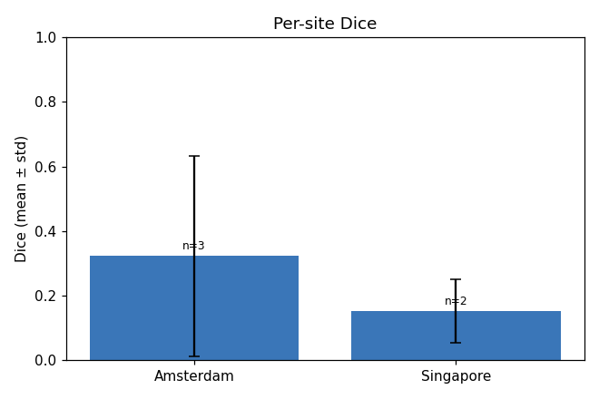
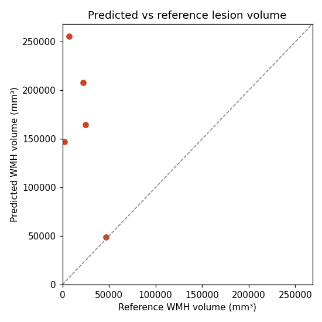

Subjects: 5
Mean Dice: 0.2544 (median 0.1911, min 0.0268, max 0.7500)


| Subject | Site | Dice | Raw voxels | Lesions | Predicted vol (mm³) | Reference vol (mm³) |
|---|---|---|---|---|---|---|
| Amsterdam_GE3T_111 | Amsterdam | 0.1911 | 63,016 | 118 | 207,932.6 | 22,082.5 |
| Singapore_70 | Singapore | 0.0540 | 87,394 | 70 | 255,579.0 | 7,368.0 |
| Amsterdam_GE3T_117 | Amsterdam | 0.7500 | 18,201 | 143 | 48,717.9 | 46,907.3 |
| Singapore_71 | Singapore | 0.2499 | 57,832 | 112 | 164,882.9 | 24,843.0 |
| Amsterdam_GE3T_118 | Amsterdam | 0.0268 | 46,422 | 145 | 147,345.5 | 2,415.3 |